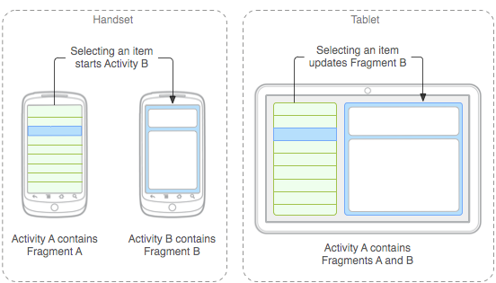
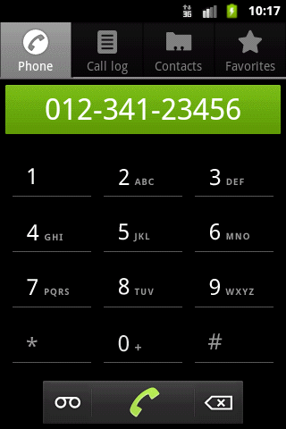
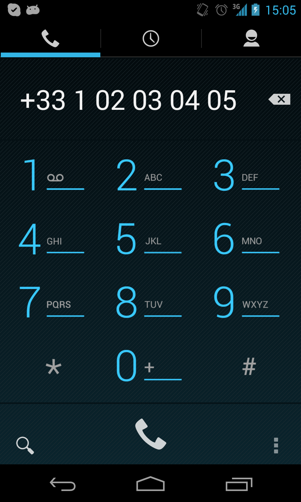

Parlez-Vous Android ?
Avancé
Jeremie Martinez
- Consultant JEE, Android et iOS
- eBusiness Information - Groupe Excilys
- jmartinez@excilys.com
Objectif
Approfondir votre connaissance d'android
Introduction
Les Fragments
La téléphonie
Système de fichiers
Services
Animations
Géolocalisation
Les Fragments
- Composants autonomes pilotables depuis une activité
- Utiles pour gérer différents terminaux
- Ont leur propre layout et cycle de vie
Déclarer un fragment
Ajouter un fragment
Statique
Ajouter un fragment
Dynamique
Remplacer un fragment
Communiquer entre fragments
Fragment->Activité
- Définir une interface
- Implémenter l'interface dans l'activité
Activité->Fragment
- Utiliser findFragmentById pour récupérer le fragment
- Appeler les méthodes publiques du fragment
Téléphonie
- Comment passer des appels
- Comment effectuer des opérations à différentes étapes de l'appel
Permission CALL_PHONE
Déclaration de la permission dans le Manifest:
Passer un appel
Directement avec l'intent ACTION_CALL

Passer un appel
En affichant le pavé numérique
PhoneStateListener
Créer une classe qui étend de PhoneStateListener
Implémenter la méthode onCallStateChanged()